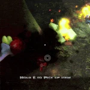
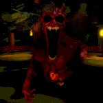
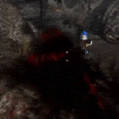
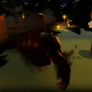
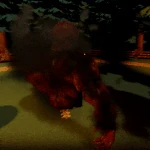

Vapor es una alma humana pecadora que después de años de castigo se convirtió en un demonio, el cual se encarga de seguir ordenes
de demonios superiores a él; tiene un cuerpo muscular de un color rojo sin un brazo izquierdo, ni parte inferior del cuerpo, su
cara está deformada y cuenta con cuernos. Tiene una fuerza brutal con poderes de teletransportación, control del cuerpo y la capacidad
de crear craneos araña a partir del craneo de sus victimas, los cuáles atacarán a otras victimas.
Tema de Persecución de Vapor
Estadisticas
PRECIO
VELOCIDAD (SPD)
ESTAMINA
Gratuito
18
110
Pasivas
Spider Skulls

Después de matar a un superviviente con su ataque básico, Vapor usa el cráneo de su víctima para crear una araña de cráneo,
la cuál será controlada por el jugador que mató y atacará a otros supervivientes.
Habilidades
Ataque basico (M1)

Vapor usa su brazo izquierdo para dar un puño que da 30 de daño a los supervivientes al golpearlos.
Scorching Grip

Vapor prepara un ataque de agarre el cuál al darle a un superviviente, este lo atrapará y agarrará para quemarlo, dándole 1 de daño
por cada 0.2 segundos. El agarre puede ser cancelado por una habilidad de empuje de cualquier clase que cuente con ella.
Demonic Shift

Vapor se prepara para transportarse a cierta distancia especificada por el indicador, tomará un tiempo para teletransportarse y si lo hace cerca
de un superviviente, recibirá 15 de daño, será cegado por un jumpscare y su cámara girará.
Blazing Cage

Vapor invoca un anillo de fuego el cual cubre un área alrededor de él y cualquier superviviente cerca de él. Si un superviviente se atreve a salir del
anillo, será quemado por 3.5 segundos recibiendo 3 de daño por cada 0.2 segundos. El anillo dura 8 segundos.